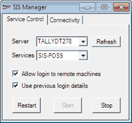
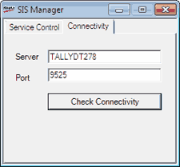

This tool helps in managing the Shoper Integration Server (SIS). You may start, stop or restart the service using this tool, either on your local computer or on any remote computer on which you have access rights.
This tool comes handy as you need not use Windows system services to manage SIS service.
How to reach: Double click SISMngr.EXE in the Shoper 9 application folder
The SIS Manager window is as shown. This window has two tabs—Service Control and Connectivity.

Server: Enter the name or IP address of the computer on which SIS is installed. Alternatively, you may select one from the list, if it is your local computer or a remote computer you have accessed earlier.
Refresh: Click to update the current status of SIS services running on the selected system. The Restart, Start and Stop buttons reflect the current status.
If you have selected a remote system, you may see the Remote Login Credentials window to accept Windows login details to access the remote server.
Services: Select the service name. All SIS services installed on the selected computer are listed. You may click Refresh to get the current status of the services running on the system.
Allow login to remote machines: Select to allow logging in to remote servers. This enables you to manage SIS on the remote server and allow exporting, extraction, downloading and uploading of data to and from the remote server. You can perform the activities based on the access rights you have on the remote server.
If this option is selected, whenever you select a remote server name and click Refresh, the Remote Login Credentials window is displayed to accept Windows login details to access the remote server.
Use previous login details: Select to use the login details provided earlier to access the remote server.

Server: Enter the computer name or IP address of the remote server to which you want to check the connectivity.
Port: Enter the port on which the service is accessible on the remote server.
Note: Default port number is 9525 for POS and 9526 for HO. These port numbers are configured automatically during installation. If these ports are being used by any other application during SIS installation, the installer requests you to enter an available port number.